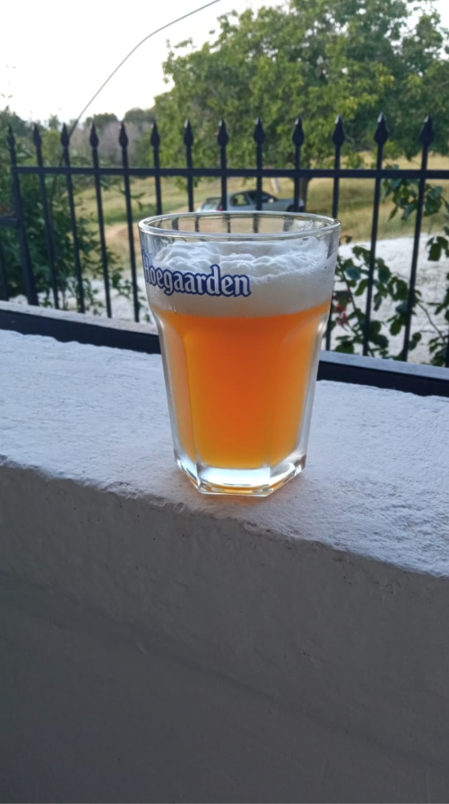
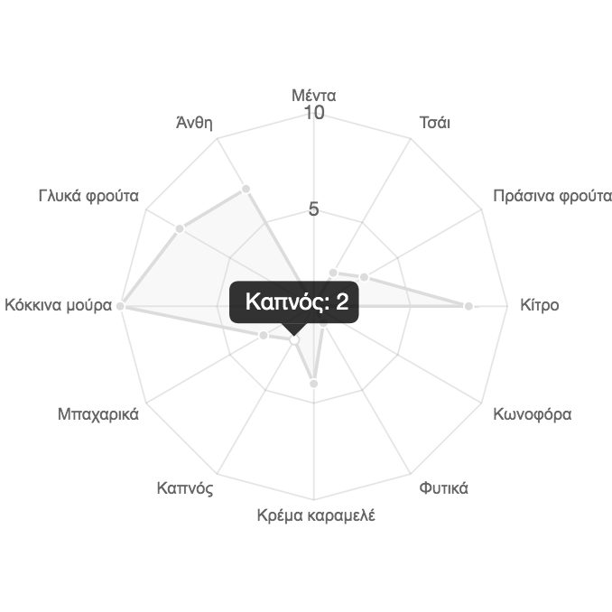
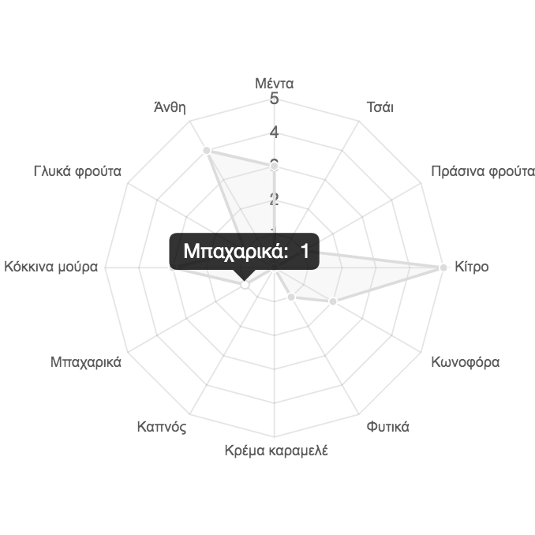

NEIPA Hack
Date: 2024-10-28
I thought I’d start my first blog post with something casual... how about a beer recipe?
A few years ago, I composed this recipe specifically for my birthday party. There would be a lot of people, so what’s better than a bit less than 23 lt. of hacky-hoppy New England IPA?
In a few words...
To start by clarifying, I don’t have any equipment for all-grain brewing, so most of the time, I am limited to beer kits. However, I kind of missed that fresh hops taste from the last time we brewed with my pal John using his all-grain equipment, and in general, I was looking for anything extra-hoppy really...
A pint of NEIPA Hack brew.
While not having the means to brew a proper NEIPA, I figured out a hacky way to brew something close to it in appearance and flavor. My fermentation bucket has a 23lt batch size, and the largest cooking pot my mom has can fit approximately 5lt. I was spending that summer with my parents. Usually, the kits I used to brew produce some kind of “sterile” beer flavor, kind of flat. Even IPA kits don’t taste as fresh as the batches we used to make from scratch with my friend John. We used to mash using Brew In A Bag (BIAB) all-grain technique with his equipment. Without all-grain equipment, my idea was to brew a total of a 23lt batch, with 5lt BIAB’ed in my mom’s pot and then mixed into the kit’s 18lt.
Mashing
During the mash process, I used 1 kg of Malt Pale Ale (Weyermann) grains and 0.5 kg of Flaked Oats to obtain the typical hazy color. I raised the water temperature to 73 Celsius, expecting that when the oats and grains were added, the temperature would drop to around 67 Celsius, ideal for the mash to allow conversion of complex sugars in the grains into simple ones that yeast can feed on. I quickly removed it from the stove, put the lid on, and wrapped the pot with 5-6 towels to prevent heat from escaping. I left it sitting for exactly an hour. After an hour, I filtered out the grains from the wort using a standard kitchen strainer and boiled for 15 minutes. During the last 2-3 minutes I used 80 grams of Cascade hops and whirlpooled it. I had calculated 18 IBU for the bitterness level. While boiling, I prepared the kit concentrate in the fementation bucket. When the 15 minutes of boiling were completed, I used the 100 Celsius wort to dissolve the kit concentrate in the fermentation bucket (HDPE food-grade plastic), as well as approximately 3/4 of the dextrose suggested by the kit, considering the additional sugars from the mashing. Then, I used cold water to bring the temperature down while filling all the way up to hit 23lt.
Temperature control during fermentation
That summer I spent at my parents’ house. It was extremely hot throughout Greece and going out was impossible. So I thought I’d spend time brewing my birthday beer. The main issue with the heat was fermentation temperature. For an IPA, I wouldn’t risk it going above 21-22°C, especially a heavily hoppy one. My dad has bees and used a metallic stainless steel tank as a honey extractor years ago. I took it and filled it halfway with ice-cold water. Then I placed it in the basement, which is naturally cooler than the ground floor. I submerged the fermentation bucket in the ice-water-filled tank and covered the top of the fermentation bucket with water-soaked towels. Below there is a picture of myself cleaning the metallic tank to use it for the first time. The first time I used the tank this way was to cool down the fermentation temperature of a Weizen beer to 17°C, to encourage “clove” flavors rather than “banana.” Initially, I considered using it as an all-grain container but never moved forward with this plan.

Metallic tank as a cooling method in the fermentation.
Fermentation
At this point, I had the metallic tank and mixture ready at 19°C. I sprinkled 11.5 gr of generic Fermentis SafAle US-05 (optimal temperature 20-25°C) and closed the bucket top, wrapping the fermentation bucket with wet towels. I took one sample and measured the Original Gravity (OG) at 1.051. Exactly as I had calculated! The fermentation was insanely fast, hitting a specific gravity (SG) of 1.014 in 4 days. During active fermentation, on day 5 I opened the lid and added the dry hops. By day 7, the Final Gravity (FG) reached 1.011. I left it for an additional 4 days to ensure fermentation was complete. 11 days total. On day 11, I manually bottled 23lt, adding some additional dextrose (160 gr) to increase the carbonation level aiming at producing a two-finger white head.
Dry hopping
Some words about the dry hopping. To wrap up other than the metallic tank DIY stuff above I did not do anything fancy throughout the fermentation and dry hopping. In the journey of hop experimentation and while I would not be able to distinguish one hop variety from another when sampling NEIPAS or heavy-hopped TIPAs or DIPAs I decided for the dry hopping to be of a single variety (almost). I don´t know if that can be considered NEIPA in the end but yea. Nevertheless, I used 30 gr simcoe for dry hopping with some remains (approximately 20 gr) of cascade from the whirlpool. Cascade was cheap, simcoe was expensive and I remeber it killed my wallet as of the time being on very tight student budget and living in Greece where for some reason shipping prices are outrageous. Therefore I guess it kindda makes sense why I didn´t want to whirlpool the good/expensive stuff. Poor man´s NEIPA it is then!. Below you can see the expected flavour pallete created by the combination of the hops, unfortuantely it is in Greek, but overall simcoe was expected to provide some floral, citrus, and berry notes while cascade was adding some mint while enhancing the citrus and berry notes. Keep in mind that simcoe is the dominant here as it was used in higher quantity. I did not take any precations to mitigate oxidisation other than manifesting for it, I guess I was lucky not to end up with amber coloured oxidised beer. Well, that´s all about it really.
Some words about the dry hopping. Aside from the DIY metallic tank setup, I didn’t do anything fancy during fermentation and dry hopping. In experimenting with hops and while I wouldn’t distinguish one hop variety from another when sampling NEIPAs or heavily hopped TIPAs or DIPAs, I decided on a single variety (mostly) for the dry hopping. I don’t know if that can be considered NEIPA, but well... Regardless I used 30 gr Simcoe for dry hopping with some remnants (about 20 gr) of Cascade from the whirlpool. Cascade was cheap, Simcoe was expensive, and I remember it strained my wallet as I was on a tight student budget in Greece where shipping prices are -for some reason- high. So I guess that’s why I didn’t want to whirlpool the expensive stuff making it a poor man’s NEIPA I guess! Below, you can see the expected flavor palette created by the combination of hops. Simcoe was expected to provide floral, citrus, and berry notes, while Cascade added some mint, enhancing the citrus and berry notes. Simcoe was dominant here as it was used in higher quantity. I took no specific precautions to prevent oxidation other than manifesting it. Luckily it didn’t end up as amber-colored, oxidised beer. That’s about it, really.
Simcoe: expected dry hopping flavour pallete.
Cascade: expected dry hopping flavour pallete.
An important note here is that I took a lot of precautionary measures using Chemipro OXI disinfectant solution throughout fermentation, dry hopping, and transferring from one container to another. I systematically disinfected the fermentation bucket, the metallic tank for the "Bain-marie," the tubes, and finally the bottles to prevent any yeast infections.
The important bit... sampling!
At the birthday party, everyone loved the beer. People knew it was homebrewed and were surprised by the extra fresh kick it had. John my pal I used to brew with, described it as "the beginning of a new era in our collaborative homebrewing". It’s sad that we both left Greece a few months later and haven’t brewed since. Hopefully, we’ll get back to it! I still remember his excitement and feedback from when we first tried it.
To wrap up, I can confidently say that it was pretty close to a standard session NEIPA, given the lower expected ABV of 4.4%. Fresh, very strong citrus aroma and kick, mild bitterness on the finish / back end, refreshing, good levels of carbonation, and generally rich in its palette, maybe a bit “aggressive.” Unfortunately, by the second week, it started to flatten and became more bitter as the hops particles settled in the bottles. By the 4th week, it had a strong hops aftertaste and was more bitter, but it was still drinkable. Cheers!